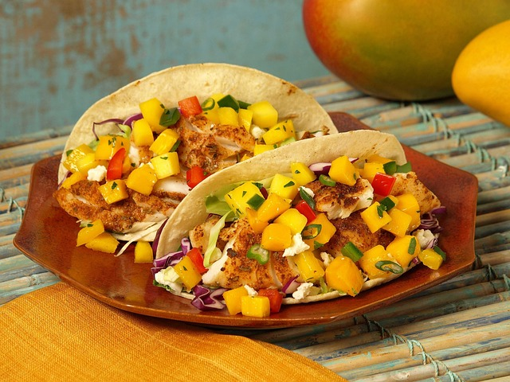

Home
Fish Tacos

Description
These fish tacos are fresh, zesty, and full of flavor.
Crispy, seasoned fish is paired with a crunchy slaw and
a creamy lime sauce, all wrapped in warm corn tortillas.
Whether you're making them for a quick weeknight dinner
or a sunny weekend gathering, these tacos are sure to impress.
Ingredients
- White fish fillets (like cod or tilapia) – 1 lb (450g)
- Garlic powder – 1 tsp
- Chili powder – 1 tsp
- Ground cumin – ½ tsp
- Salt & pepper – to taste
- Corn tortillas – 8 small
- Red cabbage – 1 cup, shredded
- Carrot – 1 small, julienned or grated
- Fresh cilantro – a handful, chopped
- Greek yogurt or sour cream – ½ cup
- Lime – 1 (juice and zest)
- Olive oil – 1 tbsp
Steps
- In a small bowl, mix garlic powder, chili powder, cumin, salt, and pepper. Rub over both sides of the fish fillets.
- Heat olive oil in a skillet over medium heat. Cook the fish for 3–4 minutes per side, or until golden and cooked through. Set aside and flake into bite-sized pieces.
- In a bowl, mix shredded cabbage, carrot, and cilantro to make the slaw. Add a pinch of salt and a squeeze of lime juice.
- In another small bowl, combine Greek yogurt (or sour cream) with lime juice and zest to make the creamy sauce.
- Warm tortillas in a dry skillet or microwave.
- Assemble tacos: Add fish to each tortilla, top with slaw, and drizzle with the lime sauce.
- Serve immediately with extra lime wedges, if desired.